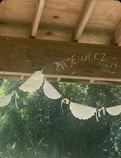

Doily Banner
Gather these materials and follow these instructions to make your own banner.
- Paper Doilys
- Twine
- Ribbons
- Hot glue
- Scissors
- Fold the paper doilies in half.
- Cut the twine to the lenght you want. I made mine as long as the perimeter of my party location so it could go around the ceiling.
- Fold the paper doilies around the twine. Hot glue the sides together. Now, it should look like half of the doily is hanging on the twine. Repeat this step along the entire lenght of twine.
- Cut ribbons to 4-7 inches long. Tie the ribbons onto the twine inbetween the doilies.
- Admire your new, adorable banner!

Dancing Ballerinas
Gather these materials and follow these instructions to make your own banner.
- Printed images of painted ballerinas
- Buttons
- Wire
- Wire cutters
- Hot glue
- Scissors
- Print and cut out images of the painted ballerinas.
- Cut a piece of wire thats about 4 inches long.
- Fold the wire in half and thread it through two holes in the buttons.
- Twist the two wire halves toghether to become one.
- Hot glue both front and backs of the ballerinas together with the wire between them.
- Bend the wire until the ballerinas stand up on a flat surface.
Other Decorations
The following are common exercises that we encourage our clients to do as part of their daily exercise routine.
- Flower Tea Candles
- Cut tissue paper in half and fold one of the halves in half. Trim fringe into the side that isn't holding the tissue paper together. Get the trim and a tea light candle and start glueing the trim around the base of the candle. Keep going until the candle is fully rapped.
- Book Page Runner
- Rip the pages out of an old book that isn't going to be read. Spread the pages across the table as a table runner.